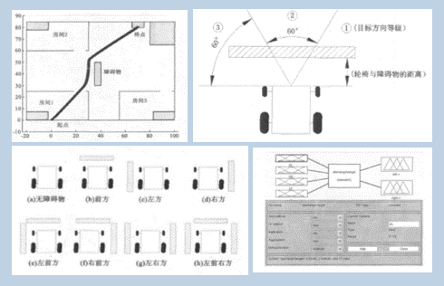
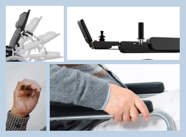
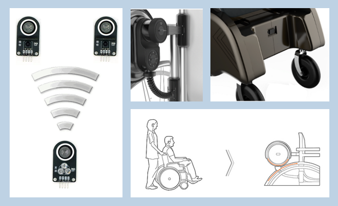

避障原理
它从本质上来讲是通过一定的方法识别障碍并且对电机转速进行一定修正，使其能在安全距离自动转向 ，以此实现避障的功能。该避障系统的控制端程序烧录在独立于主控制端的一块另外的 Arduino 板，它通过板件通讯与弯曲度控制的Arduino板进行数据传输，将测到的距离数据经过处理分析，在识别障碍时再向主控制端传输信号和数据 ，使得主控制端做出相关回应。同时我们选取了稳定性较好价格较为合理的超声波测距模块。进行多次实验，测算避障的合理距离。
弯曲度控制原理
为了能够使得轮椅操作更省力 ，人机亲和感更强，出行更加自在舒适，我们实现了轮椅的智能化。对于智能设备 ，我们需要输入端、控制端和输出端，输出端无疑就是轮椅的两个电机 。对于控制端 ，我们采用一块Arduino板单片机作为核心处理器。对于输入端 ，我们需要针对不同功能设置不同输入信号，首先对于现存电动轮椅的痛点 ，我们需要改进现有输入端。经过分析讨论得出，实现轮椅的控制需要实现对电机的转速以及转向的控制 ，摇杆虽然是看起来能最方便操控转向的控制工具 ，但是对于电机的转速无法调节。而即使是市面上较先进的万向摇杆也是只能输入一个平面的角度 ，无法实现对于电机的调速。考虑到关节的弯曲较为省力 ，尤其是指关节的弯曲只涉及到指浅屈肌和指深屈肌两块小肌肉。其次考虑到可控性 ，拉力和压力的可控性没有扭转和弯曲来得好，故我们选择了弯曲度传感器作为控制元件的核心。
紧急报警原理
输入端使用了心率监测模块、GPRS A7模块、九轴陀螺仪模块等，其中A7模块拥有读取位置和发送信息的功能，九轴陀螺仪模块的功能是测试出空间的重力加速度等相关物理量 ，为了避免轮椅颠簸等情况造成的误报，我们设置了异常倾角持续3秒的条件，满足该条件才会发出警报，在发出警报时，语音播报模块会播放录入的警报声、GPRS A7模块会读取实时地理位置，并且将该数据和倾倒的报警短信发送给紧急联系人 。对于心率模块 ，原理是由于通过当血流动力发生变化时，例如血脉率（心率）或血容积（心输出量）发生变化时 ，进入人体的光会发生可预见的散射，通过光线衰减程度的实时分析得出血脉搏率（心率）。
自动推行原理
自动推行系统可以依旧保留了推行人和被推行人的互动性 。自动推行系统的输出端依旧是电机，控制端依旧是Arduino板单片机，是一套独立于弯曲度控制的系统，控制端程序烧录在作为主控制端的Arduino板上，再加入一个按钮来切换这两个模式。自动推行系统的核心也是测距 ，因此输入端使用了两个超声波接受模块用以读取距离信息 ，一个超声波发射模块用于配合测距（其中接受模块位于轮椅靠背两端 ，发射模块位于人身上的佩戴设备上）。使得电机转动。据此我们可以实现人离轮椅越近 ，电机转速越快，人离轮椅越远，电机转速越慢的距离动态平衡调节过程，可以实现人佩戴超声波发射模块“推”着轮椅行走的功能。
